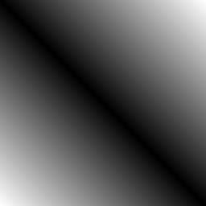
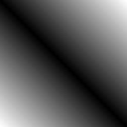  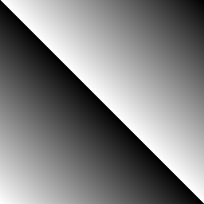 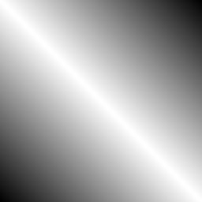 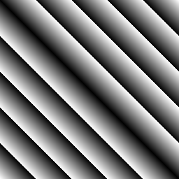
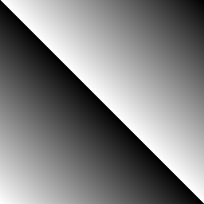 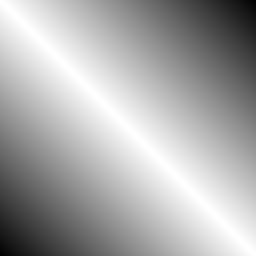 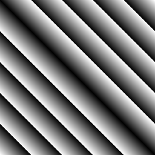 NumPy: базовые операции над массивами
import numpy as np
a = np.array([20, 30, 40, 50], dtype='int16')
b = np.arange(4) # налогично b = np.array(range(4))
print(b, b.dtype)
print('a + b', a + b)
print('a - b', a - b)
print('a * b', a * b)
print('a ** b', a ** b)
c = np.array(a ** b, dtype='int16')
print(c)
c = np.array(a ** b, dtype='uint16')
print(c)
c = np.array(a ** b, dtype='int8')
print(c)
print(c * c)
ones = np.ones((3, 4)) # матрица из 3 строк по 4 единицы в каждой строке
print(ones * a)
print((ones * a).T) # транспонирование
print(np.ones((3, 4), dtype='int8') * a)
print(np.zeros((3, 4), dtype='int8') + c)
Проверьте, как будет работать деление и нахождение остатка от деления. Обратите внимание, что несмотря на то, что среди элементов массива b имеется 0, эти операции дают корректный ответ.
В следующем примере создаётся изображение в цветовой модели "Grayscale". Каждую точку этого изображения можно покрасить в один из 256 цветов - от 0 (чёрный) до 256 (белый). Функции Image.fromarray() передаётся двумерный массив с 8-разрядными целыми числами, который превращается в картинку с соответствующими яркостями пикселей.
import numpy as np from PIL import Image arr = np.linspace(0, 255, 500, dtype='uint8') ones = np.ones((500, 500), dtype='uint8') arr_x = arr * ones arr_y = (arr * ones).T img = Image.fromarray(arr_y, 'L') img.show()
А. Используя этот пример, нарисуйте следующие картинки:
1) горизонтальный градиент от белого к чёрному
2) градиент, в котором цвета меняются одновременно и по горизонтали, и по вертикали, например:
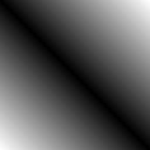 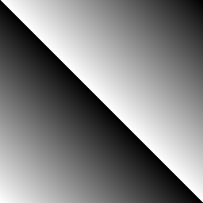 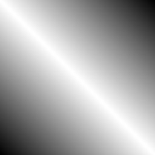 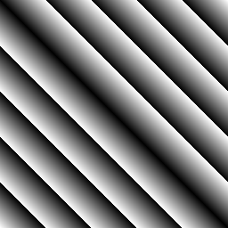
Подсказка. Массивы arr_x и arr_y не обязательно должны иметь тип данных uint8. Тип данных можно поменять перед передачей массива функции Image.fromarray(). Также можно использовать другие способы создания двумерных массивов, например:
arr_x = np.array([np.linspace(0, 255, 500, dtype='int') for i in range(500)]) arr_y = np.column_stack([np.linspace(0, 255, 500, dtype='int') for i in range(500)]) arr_xy = np.row_stack([np.linspace(0, 255, 500, dtype='int') + i for i in range(256)])
Чтобы изменить тип данных, используйте функцию np.array(), например:
arr = np.array(arr1, dtype='uint8')
Используйте специальные функции, чтобы применить математические операции сразу ко всем элементам массива, например: np.abs() или np.sqrt()
3) "Впишите" градиенты в прямоугольник произвольного размера (точку (0,0) можно при этом произвольно сдвигать), например:

4) С помощью функций np.hstack((arr1, arr2)) и vstack((arr1, arr2)) можно "склеивать" массивы по горизонтали и вертикали соответственно, например:
На полноцветной картинке цвет каждой точки задаётся тремя числами: яркостью красного, зелёного и синего луча, или "канала". Мы можем задать яркость каждого канала как отдельное чеёрно-белое изображение, а затем "сложить их в стопку" из трёх слоёв. При этом изображение получается как бы трёхслойным.
Чтобы превратить массив numpy в полноцветную картинку, он должен иметь три измерения: первое (axis=0) - пиксели в строках, второе (axis=1) - строки по вертикали, третье (axis=2) - как бы наложенные друг на друга слои цветовых каналов. Объединить три слоя, используя новое измерение, можно с помощью функции np.stack(), например, если имеются три двумерных массива одинакового размера r, g, b (axis=-1 в данном случае то же самое, что axis=2, то есть последнее измерение, "глубина"):
rgb = np.array(np.stack((r, g, b), axis=-1), dtype='uint8') img = Image.fromarray(rgb, "RGB")
В. 1) Создайте картинку, в которой яркость всех каналов изменяется (объедините три формулы из задания А). Может получиться, например, так:
2) Инвертируйте картинку (достаточно одного арифметического действия):
Маска - массив с логическими значениями. При умножении на него массива с числовыми значениями там, где было True, числовые значения не изменятся, а False превратит их в 0 (чёрный цвет). Используя маски, можно накладывать картинки друг на друга.
Для преобразования массивов с логическими значениями существуют специальные векторные логические функции: np.logical_not(), np.logical_and(), np.logical_or(). Можно пользоваться также операторами ~, +, *. Но здесь нужна осторожность, потому что логическое и арифметическое сложение даёт разные результаты.
Пример:
import numpy as np from PIL import Image arr = np.linspace(0, 255, 500, dtype='uint8') ones = np.ones((500, 500), dtype='uint8') arr_x = arr * ones arr_y = 255-(arr * ones).T mask1 = arr_x >= arr_y mask2 = arr_x >= arr_y//2 mask3 = np.logical_or(mask1, np.logical_not(mask2)) img = Image.fromarray(arr_x * mask3, 'L') img.show()
С. Создайте маски, имеющие форму 1) круга в произвольном месте картинки, 2) ромба в произвольном месте, 3) "пакмана" 4) "инь-янь". Нарисуйте с помощью этих масок красивые картинки.
 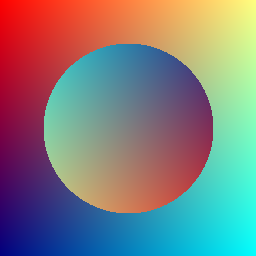
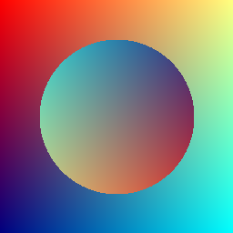  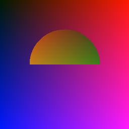
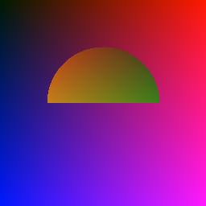 
 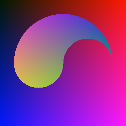 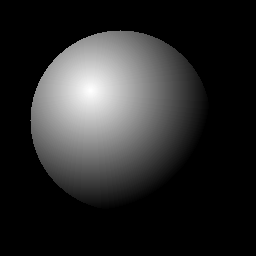
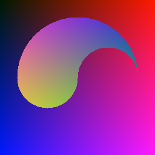 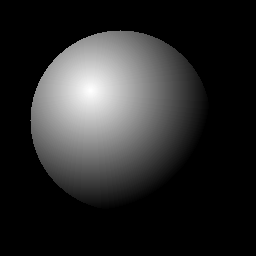
D. Цветовая иллюзия. Круги - разноцветные?
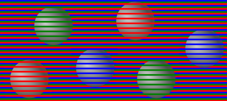
Фон состоит из тонких полосок красного, зелёного и синего цветов. Поверх фона располагаются одинаковые серые "шарики" (придумайте, как добавить такие шарики поверх уже существующего фона). Поверх каждого "шарика" рисуются полоски только одного цвета: красного, зелёного или синего. Кажущийся цвет круга будет зависеть от цвета нарисованных поверх него полосок.